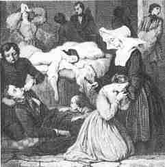
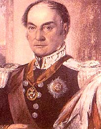
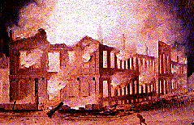
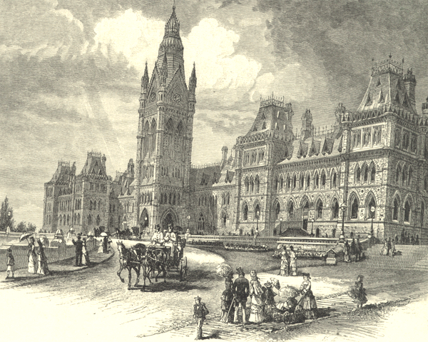

|
Jacques was born in 1813. His
century was that of Romanticism and its wind of freedom blowing
across the world. Here are some key dates in Canadian
events during Jacques's lifetime..
1815
Papineau presided over the Legislative Assembly, almost without
interruption, until 1837.
 1832
Violence in Montréal during a by-election. The
troops charged the crowd and killed three French speakers. A serious cholera
epidemic was brought from Europe by immigrants.
From 1803 until 1850, an agricultural crisis hurt the economy of
Lower Canada. The trouble came from soils that were exhausted,
poorly farmed and struck by disease and insects such as the
wheat midge.
1834
Ludger Duvernay founded the Société St-Jean-Baptiste in Montréal. The
Parti patriote, led by Papineau, presented its "92 Resolutions" to the Assembly,
setting out the people's grievances against the British government. The
main
problem was control of supply. The Legislative Assembly had the
power to levy taxes on the population, but the governor could
divert the taxes and spend the money as he saw fit. The
Patriotes demanded control of supply, which England
opposed. In reply, London passed the
10 Russell Resolutions, contrary to everything that
had been asked. French Canadians were outraged and gave their
full support to the Parti patriote, which in 1835 won a resounding
election victory.
A confrontation
between the Patriotes and the British was now inevitable. First,
a series of measures was adopted as a means of pressure.
It was decided to boycott English goods. Public
meetings were organized, the most important being the Assembly of the
Six Counties at Saint-Charles-sur-Richelieu, to explain the
situation. These meetings grew more and more numerous.
The Church declared its opposition to these events, but it
had, at that time, very little influence.
 1836 Governor
Gosford, foreseeing the crisis, imposed military rule in Québec
and in Montréal.
1837
Gosford made a last
attempt to calm things down. He suspended the 10 Russell Resolutions
and was ready to appoint a few members of the Parti patriote to the
Executive Council. But the Patriotes were not satisfied with this
offer and refused it. The governor then had no choice but to
dissolve the House of Assembly.
After
that, verbal protest turned into violence and
confrontation. The first skirmishes took place in the streets.
Battles pitted two volunteer militia clubs against each other: the Doric
Club (English) and the Fils de la Liberté (Sons of Liberty, French), to
which belonged the legendary Jos Montferland, a strongman who was
a hero to French Canadians. Seeing the situation
dangerously deteriorating, the governor issued arrest warrants
for 26 Patriote leaders and called for armed reinforcements from
Upper Canada. Québec was now in a state of war.
 On
November 23, 1837, at Saint-Denis on the Richelieu, after a hard
six-hour fight, the English troops retreated before
the fierce resistance of the Patriotes, who were greatly
encouraged by this unexpected victory, which would sadly be their
only major victory. At Saint-Charles, the
Patriotes were driven back by the British army. Outnumbered
and poorly organized, they were defeated despite a
brave fight. In reprisal, the army burned hundreds of
houses in the neighbouring villages. Despite mounting
defeats, the Patriotes held on and took up the fight again at Saint-Eustache,
under the command of Dr. Chénier. Once again they were
driven back by the army, and 70 of them hid in a church.
The army shelled it anyway, and they burned to death,
Dr. Chénier among them. The army committed many abuses
and once again burned hundreds of houses in
reprisal. The population was mistreated, and women and
children were thrown out of their homes with winter coming on. On
November 23, 1837, at Saint-Denis on the Richelieu, after a hard
six-hour fight, the English troops retreated before
the fierce resistance of the Patriotes, who were greatly
encouraged by this unexpected victory, which would sadly be their
only major victory. At Saint-Charles, the
Patriotes were driven back by the British army. Outnumbered
and poorly organized, they were defeated despite a
brave fight. In reprisal, the army burned hundreds of
houses in the neighbouring villages. Despite mounting
defeats, the Patriotes held on and took up the fight again at Saint-Eustache,
under the command of Dr. Chénier. Once again they were
driven back by the army, and 70 of them hid in a church.
The army shelled it anyway, and they burned to death,
Dr. Chénier among them. The army committed many abuses
and once again burned hundreds of houses in
reprisal. The population was mistreated, and women and
children were thrown out of their homes with winter coming on.
1838
In February the Patriotes, led by Robert Nelson, proclaimed the
Republic of Lower Canada. In November they attacked the English
troops at Lacolle and Odelltown, without success. The second
crackdown was even harsher. More villages were sacked and
burned. Nearly a thousand people were arrested. Of
these, 108 were brought to trial, 58 would be deported and
12 would be hanged at the Pied-du-Courant prison in Montréal.
A worried England sent Lord Durham with a mission to investigate.
1839
 After a six-month stay, Lord Durham submitted a report
recommending measures to restore peace. His diagnosis was
clear: the root of Lower Canada's problems was neither political nor
administrative, but came from the forced coexistence of two distinct
nations in a single state. So it was necessary: After a six-month stay, Lord Durham submitted a report
recommending measures to restore peace. His diagnosis was
clear: the root of Lower Canada's problems was neither political nor
administrative, but came from the forced coexistence of two distinct
nations in a single state. So it was necessary:
1) to ensure a loyal English majority through immigration;
2) to anglicize the French Canadians who, he said, had no
chance of survival in an Anglo-Saxon America;
3) to establish ministerial responsibility (i.e. the obligation
for ministers to leave office when the members of the Assembly
withdraw their confidence). The British government rejected this
last suggestion.
1840
To put the Canadiens (i.e. the French speakers) in a position of
political inferiority, London passed the Act of Union, which
joined the two Canadas, henceforth called the Province of Canada (Canada-Uni), under
a single parliament and made English the only official language. This
act also pooled the debts of the two Canadas. Yet
the debt of Canada West was thirteen times higher than that of
Canada East.
Between 1840 and 1850, some 40,000 French Canadians would emigrate to the
United States (900,000 between 1840 and 1940). This was also the beginning of
Irish immigration. The port of Québec was then the gateway
for all these people, who unfortunately brought
typhus with them and passed it on to the local population. This led
the government to develop public health measures.
1842
The Lafontaine-Baldwin ministry was formed, the first
alliance of French- and English-speaking politicians, which would last until
1849. Louis-Hippolyte Lafontaine reasserted in the House of Assembly
the rights of French as a parliamentary language.
|

Monument to Baldwin and
Lafontaine in front of Parliament in Ottawa,
the two men considered the first founders of
Canada.
|
1844
The Parliament of the Province of Canada moved from Kingston to Montréal.
1848
The British Parliament again legalized the use of French in
the House and in official documents, and granted responsible government.
Why did England finally accept this? With
the Act of Union, England hoped
that an alliance of the English-speaking members from both Canadas would put the
French-speaking members in the minority. But the opposite happened.
French- and English-speaking reformers joined forces to form a
coalition and hold a majority in the Assembly. Second: England,
wanting to restore its struggling economy, ended mercantilism
(exclusive trade with its colonies) in favour of free trade
with other nations, especially the United States of America. From
then on, strict control of its colony mattered much
less to it. England asked Governor Lord
Elgin to respect the will of the Assembly, which meant
ministerial responsibility.
From then on,
the governor and the legislative councils (the Senate) no longer had any
power. The Executive Council was now controlled by the elected members.
Thanks to the coalition of English and French reformist parliamentarians,
this was the beginning of what we now call federal politics.
1849
 Riot
in Montréal over the passing of the act compensating
the victims of 1837-38.
The Gazette called people to arms. English speakers burned the
Canadian parliament, which would leave Montréal for good.
1864
The Charlottetown and Québec Conferences to prepare
Canadian Confederation. That summer, young Montréal
nationalists rallied behind Médéric Lanctôt and called for the
creation of an independent Québec.
1865
The Parliament of the Province of Canada was permanently established in Ottawa.
1867
Canadian Confederation.

|